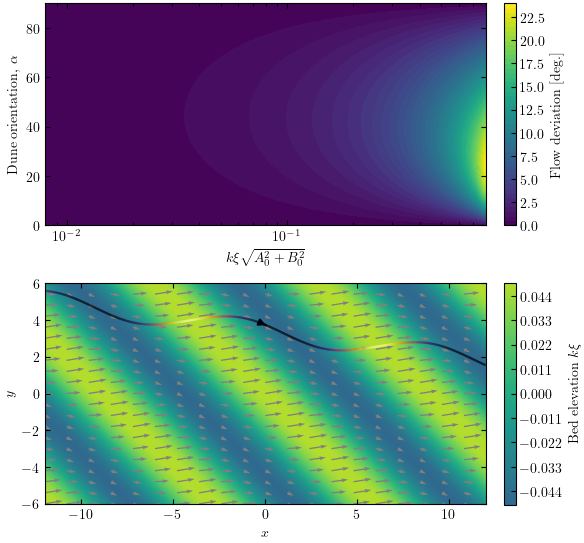

Note
Click here to download the full example code
Theoretical flow redirection¶
import numpy as np
import matplotlib.pyplot as plt
import os
import sys
sys.path.append('../../')
from python_codes.general import cosd, sind
from python_codes.linear_theory import Cisaillement_basal
import python_codes.theme as theme
theme.load_style()
def topo(x, y, alpha, k, xi):
return xi*np.cos(k*(cosd(alpha)*x + sind(alpha)*y))
# Paths
path_savefig = '../../static/output_data/figures/'
# #### Parameters
# First parameter -- k*Xi*sqrt(A**2 + B**2)
mod = np.logspace(-2.1, -0.1, 50)
AR = 0.05
A0 = mod/AR
B0 = 0
# Second parameter -- dune orientation
alpha = np.linspace(0, 90, 50)
# #### Calculating basal shear stress
x = np.linspace(0, 2*np.pi, 100)
y = np.linspace(0, 2*np.pi, 100)
#
TAU = Cisaillement_basal(x[None, :, None, None], y[:, None, None, None], alpha[None, None, :, None],
A0[None, None, None, :], B0, AR)
#
# Calculating maximum redirection
THETA = np.abs(np.arctan2(TAU[1], TAU[0])).max(axis=(0, 1))*180/np.pi
# #### Figure
fig, axs = plt.subplots(2, 1, figsize=(theme.fig_width, 0.93*theme.fig_width), constrained_layout=True)
a = axs[0].contourf(mod, alpha, THETA, levels=50)
axs[0].set_xscale('log')
axs[0].set_xlabel(r'$k \xi \sqrt{A_{0}^{2} + B_{0}^{2}}$')
axs[0].set_ylabel(r'Dune orientation, $\alpha$')
fig.colorbar(a, label='Flow deviation [deg.]', ax=axs[0])
#
x = np.linspace(-12, 12, 1000)
y = np.linspace(-6, 6, 1000)
X, Y = np.meshgrid(x, y)
alpha = 45 # dune orientation, degrees
k = 1 # shear stress calculated with non dimensional positions
AR = 0.05
B0 = 2
skip = (slice(None, None, 50), slice(None, None, 50))
cnt = axs[1].contourf(x, y, topo(X, Y, alpha, k, AR), levels=100, vmin=-(AR + 0.06), vmax=AR + 0.02, zorder=-5)
for c in cnt.collections:
c.set_edgecolor("face")
for A0 in [19.5]:
TAU = Cisaillement_basal(X, Y, alpha, A0, B0, AR)
axs[1].quiver(X[skip], Y[skip], TAU[0][skip], TAU[1][skip], color='grey')
axs[1].streamplot(X, Y, TAU[0], TAU[1], color=np.sqrt(TAU[0]**2 + TAU[1]**2), cmap='inferno', density=50, start_points=[[-4, 4]])
fig.colorbar(cnt, label=r'Bed elevation $k \xi$', ax=axs[1])
axs[1].set_xlabel('$x$')
axs[1].set_ylabel('$y$')
axs[1].set_aspect('equal')
#
plt.savefig(os.path.join(path_savefig, 'theoretical_flow_redirection.pdf'))
plt.show()
Total running time of the script: ( 0 minutes 8.403 seconds)